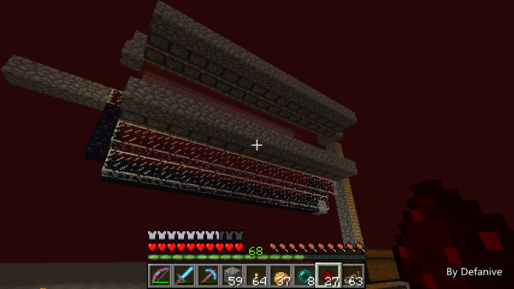
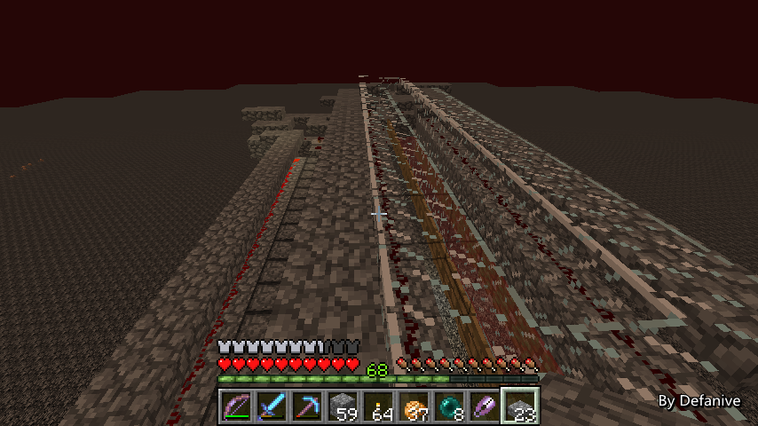

首页
上一页
292
293
294
295
296
297
297
298
299
300
301
下一页
末页
defanive2
无尽黑夜
14
注意到凋零骷髅的落脚点用了玻璃
除了美观原因以外，也是防止怪物在此处刷出
注意在地狱中猪人的刷出是不受亮度影响的
因此要避免猪人刷出必须使用玻璃这些非实体方块
同时电路做完之后也要铺上半砖做好防刷怪处理
——来自 MCLive
30465楼
2014-07-30 21:19
defanive2
无尽黑夜
14
过滤系统的核心是由两边的活塞组分别配合完成的
过滤的原理是凋零骷髅为3格高
而刷出来的其他怪物：猪人、烈焰人、骷髅都是2格高
通过高度差异来过滤出其他怪物
具体电路时序会在创造模式里面讲
简单的来说是右边的活塞组先把2格高的怪物往左侧推走
接下来右侧的活塞组收回，左侧的活塞组把3格高的凋零骷髅推向右侧
进入地狱门落点处
——来自 MCLive
30466楼
2014-07-30 21:22
defanive2
无尽黑夜
14
接下来再在整个过滤系统的入口做上栅栏门
这个栅栏门将被用作处理的开关
仅在每次处理循环开始时打开一小段时间允许怪物进入
否则都处于关闭状态
这样避免了在过滤到一半的时候新一批怪物进入而导致过滤出错
——来自 MCLive
30477楼
2014-07-30 21:31
defanive2
无尽黑夜
14
这些就是过滤系统的主元件了
接下来就可以进行电路铺设了
具体的时序在创造中再讲解
——来自 MCLive
30481楼
2014-07-30 21:34
defanive2
无尽黑夜
14
顺便整个凋零塔是15格宽
相比大家也都明白其中的原因
红石线最大可以延长15格信号
——来自 MCLive

30483楼
2014-07-30 21:37
defanive2
无尽黑夜
14
最终漏斗的电路已经铺好了！
开关是手动开启的一个循环脉冲
然后延时给到各个部分的电路
接下来只需要把电路的防刷怪做好以及封闭好内部结构
过滤系统就完成了！
——来自 MCLive
30492楼
2014-07-30 22:07
defanive2
无尽黑夜
14
内部空间已经封闭好了
这条1x15空间将会是过滤系统的入口
接下来需要用半砖覆盖所有电路部分
——来自 MCLive
30496楼
2014-07-30 22:16
defanive2
无尽黑夜
14
好了全部电路都铺完半砖了
整个过滤系统就完成了！
接下来进入集中系统的建造
——来自 MCLive

30498楼
2014-07-30 22:20
defanive2
无尽黑夜
14
集中系统的作用是什么呢？
刷怪系统我们仍然是采用移动地板的方法收集怪物
因此收集的怪物面积会是11x15的大小
而我们需要把怪物集中到1x15的空间中
因此我们需要把这些怪物横向集中到中心
由于地狱中不能使用水流，而岩浆不会产生侧向推力
因此我们需要用活塞系统来把怪物集中到1x15的中心
同时需要保证怪物在集中系统中不会收到摔落伤害
因此藤蔓是必须的
——来自 MCLive
30502楼
2014-07-30 22:26
defanive2
无尽黑夜
14
注意到集中系统这一部分落脚点是需要用实体方块的
那么就会导致刷怪
在此就应该换成地狱砖使得这部分刷出来的怪也有凋零骷髅
——来自 MCLive
30506楼
2014-07-30 22:31
defanive2
无尽黑夜
14
接下来就可以做侧推的活塞组了
很简单的侧推结构
使用粘性活塞的原因是推动实体比普通活塞要可靠得多
并且注意活塞组是在脚的这一格推动的
目的就是可以处理小猪人、小地狱史莱姆、猪人鸡
——来自 MCLive
30508楼
2014-07-30 22:35
defanive2
无尽黑夜
14
接下来又可以如此类推做下一层了
这样一直做下去形成一个V字形的漏斗状
怪物会被集中到最中间的1x15空间内以供过滤系统处理
接下来只需要把整个装置拓展到11x15大小即可
——来自 MCLive
30512楼
2014-07-30 22:38
defanive2
无尽黑夜
14
现在已经做完9x15了
还差最后一层
——来自 MCLive
30514楼
2014-07-30 22:45
defanive2
无尽黑夜
14
全部都完成了，一共11x15的锥形集中系统
PS 貌似有点晚了，还有多少观众仍然在看的？
——来自 MCLive
30515楼
2014-07-30 22:50
defanive2
无尽黑夜
14
做好外层的玻璃罩
集中系统就只剩电路就完工了
——来自 MCLive
30518楼
2014-07-30 22:54
defanive2
无尽黑夜
14
集中系统的总电路很简单
同样的循环脉冲直接连到两侧的活塞电路即可
——来自 MCLive
30520楼
2014-07-30 22:58
defanive2
无尽黑夜
14
然后在每段活塞集中的尽头给延时接到下一段即可
非常简单重复的做法
——来自 MCLive
30522楼
2014-07-30 23:00
defanive2
无尽黑夜
14
终于完成这部分的电路了
有些地方在浮空的位置需要搭临时路过去
不过总体来说工程量不大
打开循环脉冲之后，可以看到从上到下活塞分别把怪物往内推
11x15的怪物被集中到了1x15的区域内
集中系统就完成了！
——来自 MCLive
30527楼
2014-07-30 23:13
defanive2
无尽黑夜
14
接下来就是刷怪塔的最后一部分了，刷怪系统
这里由于刷怪速度不会达到非常的快
因此使用脉冲定时来回推动地板的方案
与主世界刷怪塔几乎一致
因此如果做过主世界刷怪塔的朋友
对于这部分应该很熟悉了
——来自 MCLive
30528楼
2014-07-30 23:16
defanive2
无尽黑夜
14
首先是铺好地板啦，必须是地狱砖
倒置的地狱半砖也不行，代码里面指定了地狱砖的ID
——来自 MCLive
30529楼
2014-07-30 23:26
defanive2
无尽黑夜
14
接下来自然是做好3格高的围墙了
为什么3格高？因为凋零骷髅就是3格高。。
——来自 MCLive
30530楼
2014-07-30 23:29
defanive2
无尽黑夜
14
接下来就需要加上石柱以防止地狱史莱姆的生成
hitbox大于1格宽的生物推地板无效
因此我们必须限制地狱史莱姆的生成
否则会逐渐积累到刷怪上限而影响效率
PS 事实上是有办法让大于1格宽的通过地板移动的
不过在此处不可用，以后会讲到
——来自 MCLive
30532楼
2014-07-30 23:33
defanive2
无尽黑夜
14
这样的话第一层就完成了
接下来要做的就是接着完成第二层
目前打算暂时只做两层
要提高的话可以以后再增加层数
不过今天带的物资就只够做2层
——来自 MCLive
30534楼
2014-07-30 23:35
defanive2
无尽黑夜
14
第二层做好之后全部铺上半砖就完事了
由于地狱没有天顶亮度，而电路发出的亮度很低
因此顶部不封闭也不会收到亮度影响刷怪效率
这样更方便以后扩建
——来自 MCLive
30536楼
2014-07-30 23:50
defanive2
无尽黑夜
14
最后刷怪层的总电路也是无脑脉冲不同延迟给到两边即可
——来自 MCLive
30537楼
2014-07-30 23:59
defanive2
无尽黑夜
14
然后做信号下传的电路
两个中继器交替即可
PS 具体的会在创造讲解时讲
——来自 MCLive
30538楼
2014-07-31 00:04
defanive2
无尽黑夜
14
电路做好之后开启脉冲
每层地板应该会从上到下来回移动一次
这样怪物就从上层掉落到下层了
最终落入集中装置并集中到1x15的区域内
再到过滤装置，只滤出凋零骷髅被运回主世界
——来自 MCLive
30539楼
2014-07-31 00:09
defanive2
无尽黑夜
14
至此，整个凋零塔的主体部分就完成啦！
接下来还缺少凋零骷髅被运送到主世界后的集中装置
——来自 MCLive
30542楼
2014-07-31 00:10
defanive2
无尽黑夜
14
不过在做来回的地狱门之前
我们先算一下玩家在地狱的挂机点在哪里
由于我们的设计是让凋零骷髅在地狱门的位置仍然不会despawn
而其他怪物掉出地狱门的高度之后就会立即despawn
因此我们需要让地狱门的角落正好处于玩家的128格以内
很明显我们玩家会在高度y=255的地方挂机
以及15格宽地狱门的中心，并且是处于靠凋零骷髅这一侧的
因此我们可以计算出
x^2+8^2+(255-134)^2=128^2
解得x=40.98
也就是说我们的挂机点必须要在地狱门靠近凋零骷髅这边的40格以内
——来自 MCLive
30545楼
2014-07-31 00:18
defanive2
无尽黑夜
14
在挂机点出做一个简单的安全措施就可以了
——来自 MCLive
30548楼
2014-07-31 00:30
首页
上一页
292
293
294
295
296
297
297
298
299
300
301
下一页
末页